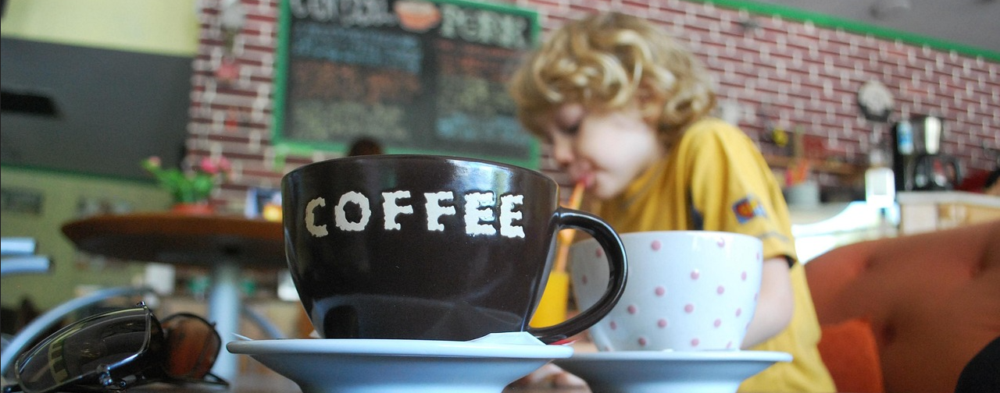
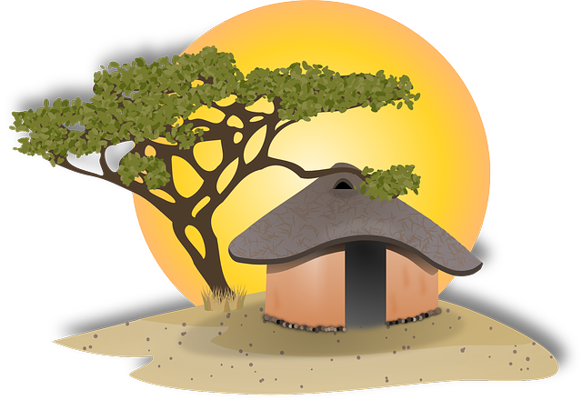
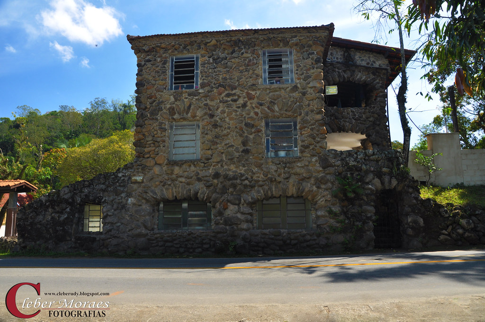
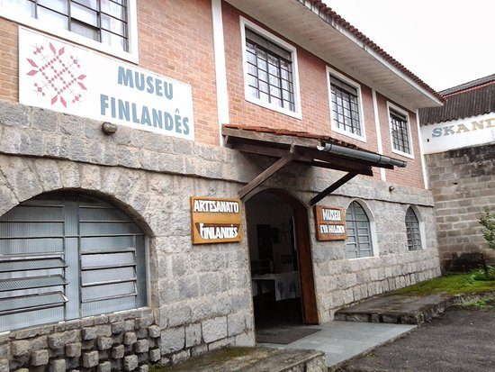

Penedo é um distrito de Itatiaia , na região das Agulhas Negras, no sul do Estado do Rio de Janeiro. Fundada por imigrantes finlandeses que encontraram ali um clima frio, com rios repletos de cachoeiras de água cristalina. A cidade mantém até hoje características arquitetônicas que remetem à Escandinávia. Atualmente o local é conhecido pela forte herança cultural da colônia finlandesa. E, ainda oferece uma variada, simpática e acolhedora rede hoteleira, ótimos restaurantes e lojas de artesanato interessantíssimas.

Esta casa exótica aos olhos dos brasileiros em geral. Ela foi erguida por imigrantes finlandeses com pedras de rio. Esta curiosa construção encontra-se logo no início da via principal, a 150 metros, à direita de quem está chegando a Penedo.
O museu preserva a cultura dos imigrantes, os fundadores da famosa Colônia Finlandesa. Lá estão expostos mais de mil objetos trazidos diretamante da Finlândia, do começo do século XX, quando eles aqui chegaram.
